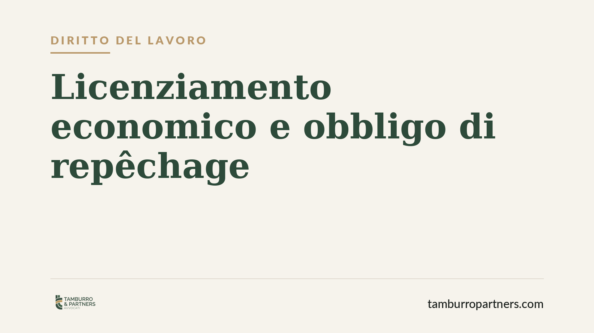

Licenziamento economico: l'obbligo di ricollocare il lavoratore
Il licenziamento per motivi economici non è mai automatico. Prima di recedere dal contratto, il datore deve dimostrare di aver tentato di ricollocare il lavoratore in mansioni alternative disponibili. È il cosiddetto obbligo di repêchage, la cui violazione rende il licenziamento illegittimo. Vediamo quando l'azienda non può procedere e cosa può fare il dipendente.

Il fatto: quando la crisi non basta
L'esigenza economica dell'impresa non giustifica di per sé il licenziamento. Anche di fronte a una riorganizzazione reale, il datore di lavoro deve superare un ulteriore passaggio: verificare se il dipendente possa essere impiegato in un'altra posizione ancora presente in azienda.
Questo passaggio prende il nome di repêchage (termine francese che indica il "ripescaggio" del lavoratore). Solo dopo aver accertato l'impossibilità di ricollocazione il recesso diventa legittimo.
Inquadramento normativo
Il licenziamento per motivi economici rientra nel giustificato motivo oggettivo, disciplinato dall'art. 3 della legge 15 luglio 1966, n. 604. La norma consente il recesso per "ragioni inerenti all'attività produttiva, all'organizzazione del lavoro e al regolare funzionamento di essa".
La Corte di Cassazione ha però chiarito che questa formula non autorizza scelte espulsive incondizionate. Il datore deve provare tre elementi cumulativi: l'effettività della ragione organizzativa; il nesso di causalità tra quella ragione e la soppressione del posto; l'impossibilità di ricollocare il lavoratore in mansioni compatibili con il suo bagaglio professionale.
Sull'estensione di quest'ultimo obbligo la giurisprudenza è progressivamente intervenuta. Dopo la riforma dell'art. 2103 del codice civile (operata dal d.lgs. 81/2015), il repêchage riguarda non solo le mansioni equivalenti, ma anche quelle inferiori compatibili, purché disponibili al momento del recesso.
Cosa cambia in concreto
Per il datore di lavoro il quadro è chiaro: la crisi o la riorganizzazione, da sole, non mettono al riparo da un contenzioso. L'onere della prova è a carico dell'azienda. Deve essere l'impresa a dimostrare che non esistevano posizioni alternative, non il lavoratore a provare il contrario.
Questo significa documentare l'organigramma, le posizioni vacanti nel periodo, le eventuali assunzioni effettuate a ridosso del licenziamento. Un'assunzione per mansioni analoghe poco prima o poco dopo il recesso è un indizio quasi decisivo di illegittimità.
Per il lavoratore l'obbligo di repêchage rappresenta una tutela sostanziale. Anche quando la ragione economica è veritiera, il licenziamento può essere annullato se emerge che l'azienda avrebbe potuto ricollocarlo. Le conseguenze variano in base alla data di assunzione e alla disciplina applicabile (tutele crescenti per gli assunti dopo il 7 marzo 2015, art. 18 dello Statuto dei lavoratori per i precedenti).
È utile ricordare che il termine per impugnare il licenziamento è breve: 60 giorni dalla ricezione della comunicazione scritta per l'impugnazione stragiudiziale, seguiti da 180 giorni per il deposito del ricorso in tribunale o per la comunicazione della richiesta di conciliazione.
Cosa fare in concreto
Per il lavoratore:
- Conserva la lettera di licenziamento e verifica che indichi le ragioni oggettive in modo specifico.
- Impugna per iscritto entro 60 giorni: anche una semplice raccomandata o PEC interrompe il termine.
- Raccogli elementi sulle posizioni disponibili in azienda e su eventuali assunzioni recenti.
Per il datore di lavoro:
- Prima del recesso, documenta la verifica di ricollocazione, comprese le mansioni inferiori compatibili.
- Evita assunzioni per posizioni analoghe nei mesi immediatamente successivi al licenziamento.
In entrambi i casi consigliamo di far valutare la posizione da un legale prima che i termini decadenziali maturino: una difesa efficace dipende spesso dalla tempestività.
Un principio consolidato
La tenuta di un licenziamento economico si misura sulla completezza dell'istruttoria interna. La ragione organizzativa deve esistere, ma non è sufficiente: è la prova dell'impossibilità di ricollocazione a fare la differenza in giudizio. Un percorso ricostruibile e documentato riduce il rischio per l'impresa e, allo stesso tempo, definisce con precisione i margini di tutela del lavoratore.
---
*Contributo informativo a cura di Tamburro & Partners - Avv. Giuseppe Tamburro. Non costituisce parere legale.*
Ogni storia di lavoro ha i suoi tempi.
Se gestisci HR e vuoi un confronto su contenzioso, ispezioni o licenziamenti, scrivi allo studio. Ti rispondiamo entro un giorno lavorativo.